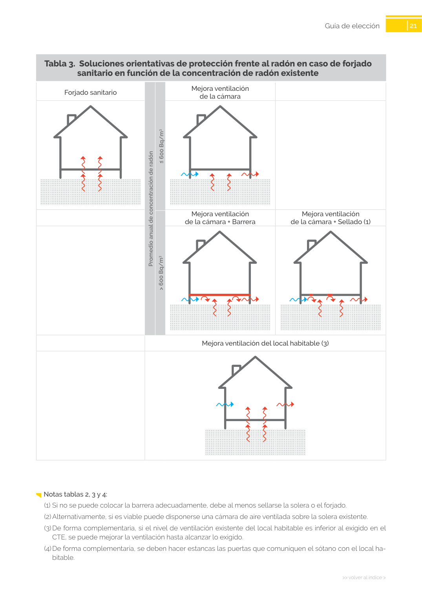
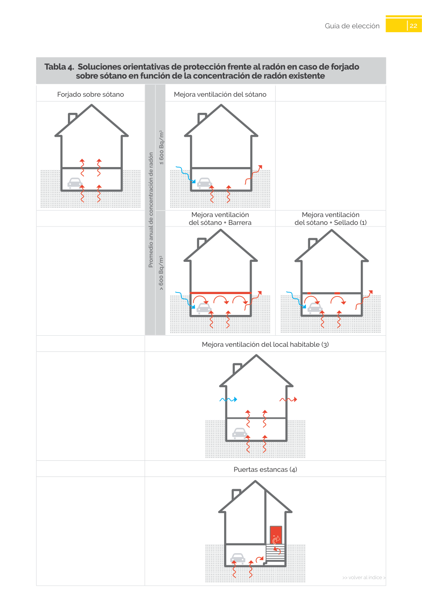

<!doctype html>
<html lang="es"><head><meta charset="utf-8">
<meta name="viewport" content="width=device-width, initial-scale=1">
<title>GUIA · sanitario en función de la concentración de radón existente</title><link rel="stylesheet" href="../estilo.css">
</head><body>
<nav><a href="../index.html">Índice</a> › <a href="../doc/guia-pdf-23d2f2198c3b-sin-fecha-6765d0c34c51.html">GUIA</a> › a0056</nav>

<header class="meta">
<p><a href="../doc/guia-pdf-23d2f2198c3b-sin-fecha-6765d0c34c51.html">GUIA</a> · sanitario en función de la concentración de radón existente · versión sin-fecha · capa guia</p>
</header>
<div class="cita"><strong>Cita:</strong> GUIA · ID técnico a0056 · sanitario en función de la concentración de radón existente · páginas físicas pág. 21-22 (impresas: ['21', '22'])</div>
<p>Formatos: <a href="../../contenido/docs/GUIA-PDF-23d2f2198c3b/sin-fecha__6765d0c34c51/apartado/a0056__sanitario-en-funcion-de-la-concentracion-de-radon-existe.json">JSON compacto</a> · <a href="../../contenido/docs/GUIA-PDF-23d2f2198c3b/sin-fecha__6765d0c34c51/apartado/a0056__sanitario-en-funcion-de-la-concentracion-de-radon-existe.md">Markdown</a> · <a href="../../contenido/docs/GUIA-PDF-23d2f2198c3b/sin-fecha__6765d0c34c51/fuente.pdf">PDF fuente</a></p>
<p><a href="../doc/guia-pdf-23d2f2198c3b-sin-fecha-6765d0c34c51.html">Ámbito del documento</a> · <a href="../doc/guia-pdf-23d2f2198c3b-sin-fecha-6765d0c34c51.html#ambito">texto del ámbito</a> ·
<a href="../doc/guia-pdf-23d2f2198c3b-sin-fecha-6765d0c34c51.html">documento y tablas</a></p>
<nav><a href="guia-pdf-23d2f2198c3b-sin-fecha-6765d0c34c51__a0055.html">← en función de la concentración de radón existente</a> <a href="guia-pdf-23d2f2198c3b-sin-fecha-6765d0c34c51__a0057.html">sobre sótano en función de la concentración de radón existente →</a></nav>
<h1>sanitario en función de la concentración de radón existente</h1>
<p>Tipo: formulas, tablas, figuras · nivel 3 · sección estimada: Guía de elección · padre: a0054</p>
<pre class="literal">sanitario en función de la concentración de radón existente
Forjado sanitario
Mejora ventilación
de la cámara
Mejora ventilación
de la cámara + Barrera
Mejora ventilación
de la cámara + Sellado (1)
Mejora ventilación del local habitable (3)
Promedio anual de concentración de radón
&gt; 600 Bq/m3
≤ 600 Bq/m3

22
&gt;&gt; volver al índice &gt;
Guía de elección
Tabla 4.  Soluciones orientativas de protección frente al radón en caso de forjado</pre>
<h2>Tablas en estas páginas</h2><ul><li>p. 21 · <a href="../../contenido/docs/GUIA-PDF-23d2f2198c3b/sin-fecha__6765d0c34c51/tabla/p0021_t01.json">p0021_t01.json</a> · <a href="../../contenido/docs/GUIA-PDF-23d2f2198c3b/sin-fecha__6765d0c34c51/tabla/p0021_t01.csv">.csv</a></li><li>p. 22 · <a href="../../contenido/docs/GUIA-PDF-23d2f2198c3b/sin-fecha__6765d0c34c51/tabla/p0022_t01.json">p0022_t01.json</a> · <a href="../../contenido/docs/GUIA-PDF-23d2f2198c3b/sin-fecha__6765d0c34c51/tabla/p0022_t01.csv">.csv</a></li></ul><h2>Página visual</h2><figure><a href="../../contenido/docs/GUIA-PDF-23d2f2198c3b/sin-fecha__6765d0c34c51/figura/p0021.png"></a><figcaption>Página visual 21 (fuente para fórmulas/tablas/figuras)</figcaption></figure><figure><a href="../../contenido/docs/GUIA-PDF-23d2f2198c3b/sin-fecha__6765d0c34c51/figura/p0022.png"></a><figcaption>Página visual 22 (fuente para fórmulas/tablas/figuras)</figcaption></figure><p class="aviso">PDF fuente redistribuible: copia fiel enlazada en esta página (SHA256 verificado).</p>
<footer>Generado estáticamente desde JSON normalizado; sin JavaScript ni servicios externos.
El JSON es la fuente; este HTML es caché reproducible.</footer>
</body></html>
